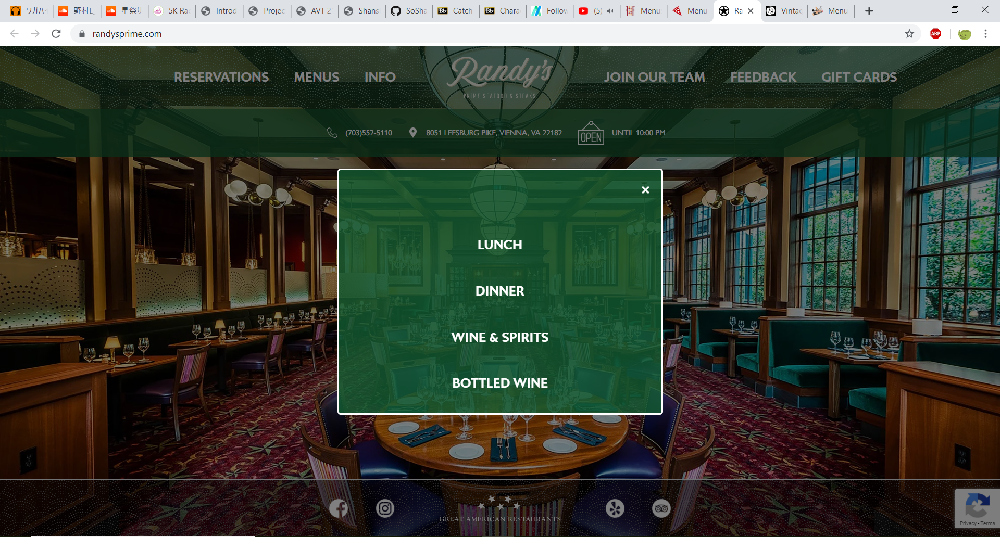
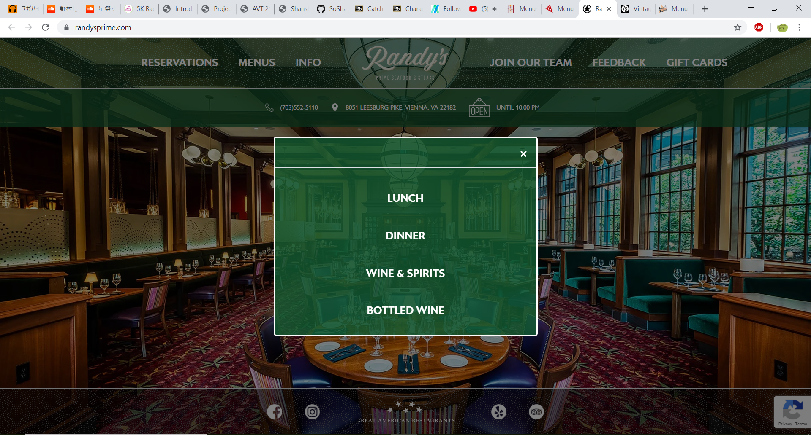

This restaurant's website features a clean and easy to navigate design. Since it has a few locations in virginia, the menu is sorted by location. However, clicking on a specific menu, for example, DC --> Dessert, it'll link to a PDF file on a separate tab rather than a webpage. It is a lazy design, but it kinda works provided people can view PDFs.
The homepage to this pizza place is designed like what's trending today. A big picture emphasises the food and the format in a scrolling format. If you were to click one of the tabs at the side, it'll redirect you down to where you need to scroll to. It's a simple design, which reminds me a brochure.
 

Very similar to the Founding Farmer's website design. The pictures on the homepage do not go on a rotation, what you see is what the homepage truly looks like. It'd be a nice feature if it did considering how much space the picture eats up. The menu part is also a PDF link.
The homepage is unique as the menu bar scrolls sideways if you mouse over it. If you hover over "menu", then it'll move to menu and reveal a bit more that it's not showing. The black background is actually where pictures appear and on a rotation. The menu page is clean and straight forward. It is clearly mobile friendly, however for a PC, it'd be easier to read if it was separated out into collumns per each section.
The homepage is straight forward. THe picture in the background does not change either. I like the photoheading a section such as the menu. However, the menu is not actually programmed in. It's actually a picture. Something like this would be too difficult to program.